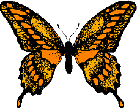

|  | Borboletas |
No tórax tem 6 patas e em geral 2 pares de asas. No abdômen encontram-se os órgãos vegetativos e reprodutivos. Borboletas apresentam 4 fases distintas em seu desenvolvimento: ovo, lagarta - fase jovem, crisálida - transformação e borboleta - fase adulta
Quase todas as espécies de borboletas são ativas durante o dia Muitas espécies de borboletas têm diferentes cores e texturas em suas asas, um dos motivos que fazem seus admiradores colecioná-las.
As borboletas são importantes polinizadoras e alimentam-se de líquidos variados.
O corpo da borboleta é muito leve, as asas são muito largas, mas, mesmo assim ela acaba conseguindo pousar na flor aberta, de onde suga o néctar adocicado.
As borboletas existem em todas as partes do mundo, com exceção das regiões glaciais
De voo enérgico, desloca-se até mesmo durante a noite, sendo uma das poucas espécies que continua a voar mesmo nos dias de Outono e Inverno, mormente quando haja sol.
Caracteriza-se, ainda pelas asas de cor castanho-escura, com padrões brancos e avermelhados ou alaranjados.
adultos preferem espaços abertos com flores, bosques, prados, jardins e florestas pouco densasEsta espécie usa técnicas de camuflagem para escapar dos predadores.
Quando pousa em campo aberto ou entre rochas, mantém as asas fechadas, ficando camuflada graças às cores da face inferior das asas, ao passo que, quando pousa em locais floridos, mantém as asas abertas, por molde a confundir os predadores com o colorido da paisagem.
Alimentam-se do néctar de flores, como as das silvas (Rubus fruticosus), da erva-das-disenterias (Pulicaria dysenterica), do trevo-cervino (Eupatorium cannabinum), da hera (Hedera helix), do ligustro (Ligustrum vulgare), do cardo-cardador (Dipsacus fullonum) e dos cardos, bem como ainda se alimenta de partes de fruta em decomposição.
A borboleta-rainha-alexandra,(Ornithoptera alexandrae) é uma espécie de borboleta endêmica das florestas da Papua-Nova Guinéé uma espécie de borboleta endêmica das florestas da Papua-Nova Guiné É comumente descrita como sendo a maior espécie de borboleta do mundo, cujas fêmeas alcançam facilmente mais de 27 centímetros de envergadura.
Espécie foi nomeada em 1907 pelo barão Lionel Walter Rothschild, em honra à rainha Alexandra, esposa de Eduardo VII do Reino Unido. O primeiro europeu a descobrir a espécie foi Albert Stewart Meek, em 1906, empregado por Walter Rothschild para coletar espécimes para a história natural de Papua-Nova Guiné.
Embora a primeira amostra tenha sido capturada com a ajuda de uma espingarda de pequeno porte, Meek logo descobriu as lagartas da borboleta e criou a maior parte dos primeiros espécimes.As fêmeas possuem asas marrons com manchas brancas e um corpo de cor creme com uma pequena mancha vermelha em seu tórax.
Já foram encontradas fêmeas com uma envergadura de 31 centímetros (12,2 polegadas), um comprimento de corpo de 8 centímetros (3,2 polegadas) e uma massa corporal de até 12 gramas (0,42 onças) - todas essas medições incomuns para uma borboleta.